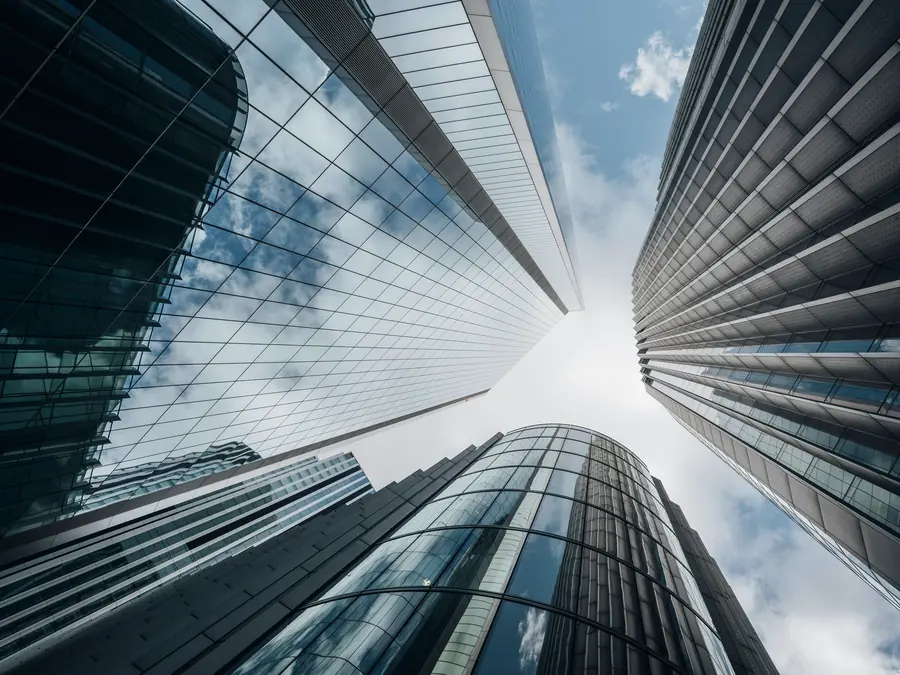
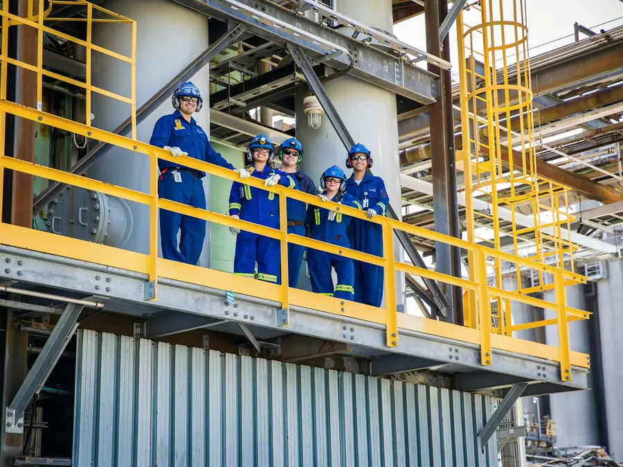

Not the contractor. Not the lender. The architect of the transaction.
A Dubai-based advisory team that brings finance, engineering, E&S, procurement and project implementation together, so projects can reach financial close and keep moving after it.
6stages covered, from first screening to final drawdown
The gap we close
Projects do not become financeable by capital alone
Many projects are technically attractive but not financeable. Others have a financing idea but lack the technical, procurement or execution discipline required by lenders, ECAs, IFIs and DFIs. We address these gaps early, before they turn into costly delays, redesign, documentation gaps and financing setbacks.
Core team across project structuring, engineering, procurement, contracts and ESIA, working alongside senior export-finance, banking and legal partners.
01 / 07
Numan Tüfekçi
General Manager
Civil Engineer (MSc) with more than two decades in project, contract and procurement management across Türkiye, Qatar, Dubai and Central Asia. On Istanbul’s multi-lender ISMEP program (EUR 4.5 billion; World Bank, EIB, CEB, IsDB, AIIB), he coordinated five IFI-financed projects worth approximately EUR 600 million, with international stakeholders: the Okmeydanı, Göztepe and Kartal training and research hospitals (nearly 3,400 beds and about 800,000 m² in total) and the Tuzla and Hasdal disaster management centers. He structured a USD 350 million EPC+F model for solar projects and has set up companies for international operations in the USA, the UAE, the Netherlands and Uzbekistan.
Civil Engineer (MSc) with more than two decades in project, contract and procurement management across Türkiye, Qatar, Dubai and Central Asia. On Istanbul’s multi-lender ISMEP program (EUR 4.5 billion; World Bank, EIB, CEB, IsDB, AIIB), he coordinated five IFI-financed projects worth approximately EUR 600 million, with international stakeholders: the Okmeydanı, Göztepe and Kartal training and research hospitals (nearly 3,400 beds and about 800,000 m² in total) and the Tuzla and Hasdal disaster management centers. He structured a USD 350 million EPC+F model for solar projects and has set up companies for international operations in the USA, the UAE, the Netherlands and Uzbekistan.
Mechanical Engineer with 22 years of experience across Germany, Türkiye and several Gulf countries, including 17 years on Istanbul’s multi-lender ISMEP program (World Bank, EIB, CEB, IsDB, AIIB), where he worked on numerous large IFI-financed projects. He has contributed to complex developments requiring coordination across disciplines, financing frameworks and regional standards, with expertise in energy efficiency, renewable energy systems, industrial production facilities and hospital projects.
Civil Engineer with 20+ years in EPC and design-build delivery, specializing in FIDIC contracts, claims and dispute resolution. Co-Chair of CICA’s Working Group on Construction Contracts and Multilateral Development Banks, focused on procurement frameworks and risk allocation for MDB-financed projects. Former Head of Contracts Management at Yapı Merkezi (USD 10B+ international EPC portfolio) and subcontract manager on the 1915 Çanakkale and Yavuz Sultan Selim bridges.
Electrical/Electronics Engineer with 16 years of international experience in electrical contracting and renewable energy. His solar and wind work in Türkiye and Montenegro spans site selection, feasibility studies, engineering, EPC, commissioning and acceptance, and he was instrumental in Montenegro’s first ground-mounted and rooftop solar projects. He brings 2+ GW of energy experience.
Ankara-based Mechanical Engineer with more than 24 years in the design, procurement and construction of renewable energy projects. He specializes in the development, planning, procurement, construction and management of solar and wind projects across Türkiye, Europe and Africa, and has taken more than 2 GW of renewable capacity through development and grid connection.
Electrical and Electronics Engineer with more than 14 years in the energy sector, specializing in power system planning, solar, wind and battery storage integration, energy policy and the Turkish electricity market—the grid and market inputs behind project revenue assumptions. He has contributed to more than 50 projects across Europe, Africa, the Middle East, Central Asia and North America.
Toronto-based E&S specialist with 20+ years on infrastructure, energy and industrial projects worth USD 500M to 2.4B. He focuses on international lender requirements and E&S bankability for ECA/IFI/DFI- and MDB-supported projects, covering ESIA, IFC Performance Standards, Equator Principles, sustainability strategy and risk management.
At a glance
CSM2 Finance at a glance
Integrated advisory
Finance, engineering, E&S, procurement and project implementation advisory, developed together from the beginning.
Bankable projects
Technically mature, commercially coherent and properly packaged projects that meet lender requirements.

Financing ecosystem
Early alignment with ECAs, IFIs, DFIs, commercial lenders and risk partners on the route to financial close.

Beyond financial close
Disbursement, documentation, contractor interfaces and compliance, carried through to project delivery.
Start a conversation
We do not sell a financing line. We architect the transaction.